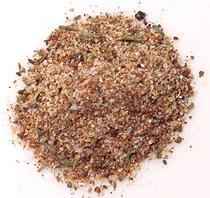

 |
All Purpose SeasoningCaribbean | ||||
| Makes: Effort: Sched: DoAhead: |
1/2 cup * 10 min Yes |
An essential seasoning in Caribbean homes, but usable everywhere. There is no "official" recipe, but this one is typical. | |||
|
|
1 2 2 1 1 1/2 1/2 2 1 1 |
T T T t T T T t T T |
Allspice Berries Garlic Powder Onion Powder Chili Powder (1) Paprika Thyme, dried Oregano, dried Celery Seed Salt (2) Pepper, Black |
Make: - (10 min)
|